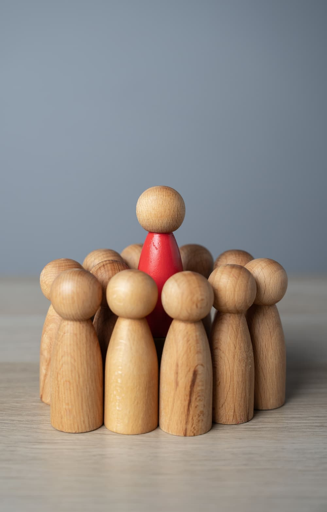

Transformo ideas en experiencias que conectan y cautivan.
¿Quieres saber más de mi?
Director
Creativo
Con más de una década de experiencia en el mundo del diseño y la comunicación, he perfeccionado el arte
de transformar ideas en realidades visuales impactantes.
Mi enfoque se centra en la combinación
de creatividad y estrategia, asegurando que cada proyecto no solo sea estéticamente impresionante, sino
también eficaz y alineado con los objetivos de la marca.

Visión Estratégica
